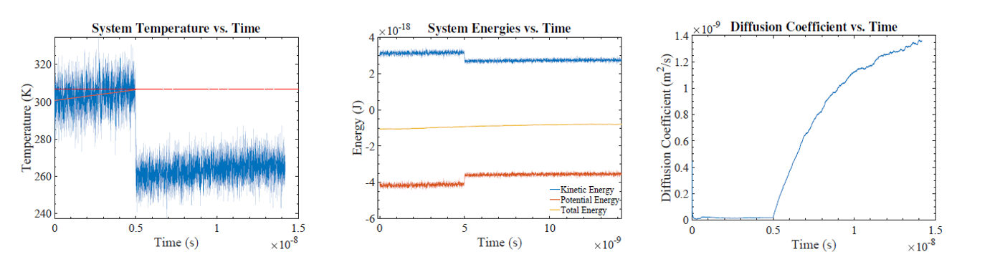

Melting of Argon
Molecular dynamics makes use of classical equations of motion to study atomic and molecular systems and their properties. The basic concept is to chose a mathematical model for the interactions between system constituents and solve the equations of motions to generate particle trajectories. Then many system properties such as its structure, equation of state, transport coefficients, and non-equilibrium response (i.e. due to deformation) can be studied.
I developed an object-oriented C++ molecular dynamics (MD) code and used it to model the melting of argon. The simulation is initialized with 500 atoms placed into a face-centered cubic structure with the atoms given initial velocities based on the Maxwell-Boltzmann distribution corresponding to a chosen temperature. The interatomic interactions are modeled by the Lennard-Jones potential. Then the system is allowed to evolve by solving classical equations of motion with the velocity Verlet method. The time-evolution of the atomic motions at different temperatures is studied. The system's energies, temperature, and diffusion co efficient are calculated and analyzed to nd the crystal's melting point. It is found that the calculated melting point has some variation with different sim ulation approaches. The upper limit of the melting point is determined to be about 290K.
Figure: Temperature, energies, and diffusion coefficient vs. time for system initialized with Ti = 610K with the NVE ensemble.
Argon has a melting point of 83.8K and boiling point of 87.3K. One im- mediately wonders, why these simulation results are so drastically different. At rst glance, it seems that I found a solid-liquid transition in a region where argon should be a gas! However, we must not forget that pressure affects the phase of a material and that the "standard" melting and boiling points are given at atmospheric pressure. Carefully considering how we constructed this simulation, I realize that the periodic boundary conditions arti cially severely increase the pressure of the system. Most solids and liquids expand when heated but in our simulation we do not allow our system to expand, since it is kept at constant volume. With periodic boundary conditions, if an atom tries to leave the volume, it is arti cially put back into the box on the other side. A solid which is not allowed to expand will experience an increasing pressure as the temperature rises. We can roughly estimate the pressure of a gas of 500 argon atoms con ned to our simulation cell volume at 300K by using the ideal gas law P = NkBT=V . The pressure is about 1100 atmospheres or 11 kbar. If we look at the experimentally-determined phase diagram of argon at these pressures, it is expected to be a solid or a liquid and the phase transition is expected to occur at 250-300K. This means that the melting temperature pre- dicted by this simulation is reasonable.
Read More